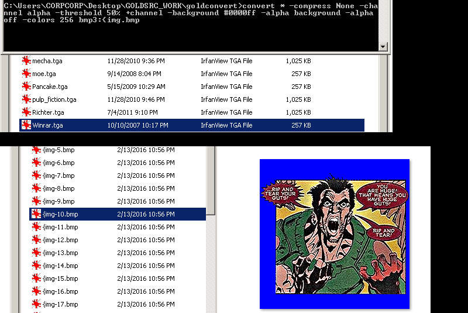
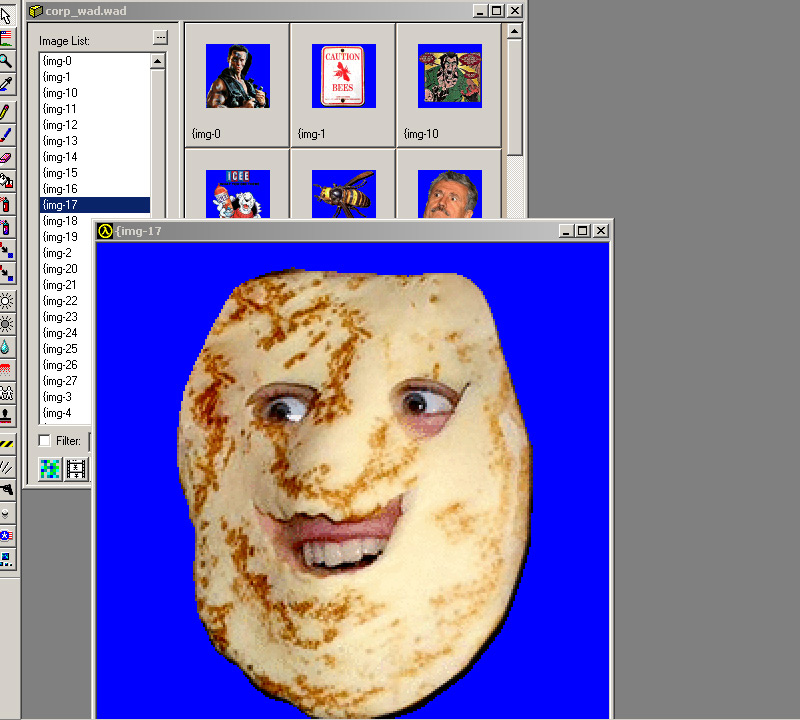
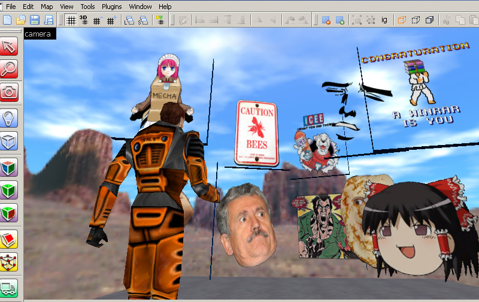
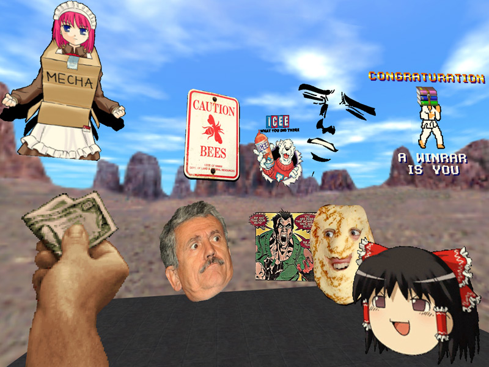

Sometimes you need to process lots of images at once and trying to do this for transparent images seems difficult with the amount of steps involved. This is where IMAGEMAGIK comes into play. IMAGEMAGIK is a powerful command-line program that can do many different functions and Ive found a way to process images with existing transparency/alpha channel into goldsrc-ready BMPs.
What also makes this useful is that it can be done on multiple image formats and in the example I will show has images with transparency in different formats like PNG and TGA.
Download IMAGEMAGIK here.
1) Open up your command line ( Windows key+R and then type "cmd") navigate to your folder of images and then paste (right click paste here on the cmd) these lines:
convert * -compress None -channel alpha -threshold 50% +channel -background #0000ff -alpha background -alpha off -colors 256 bmp3:{img.bmp

2)Once imagemagick runs its course drag and drop the new BMPs into wally. Also since I specified "{" on the front of the filename cmd all our images have already been prepared for transparency. Save out your .wad file.

3)Load your .wad into hammer or J.A.C.K and apply to walls (similar to in part2 of this series )


4) If needed you can adjust the "threshold" percentage in that command line to suit your needs. For example if you have a soft shadow, different values will crop it closer or further away.
This concludes the GoldSrc Texture Tutorial